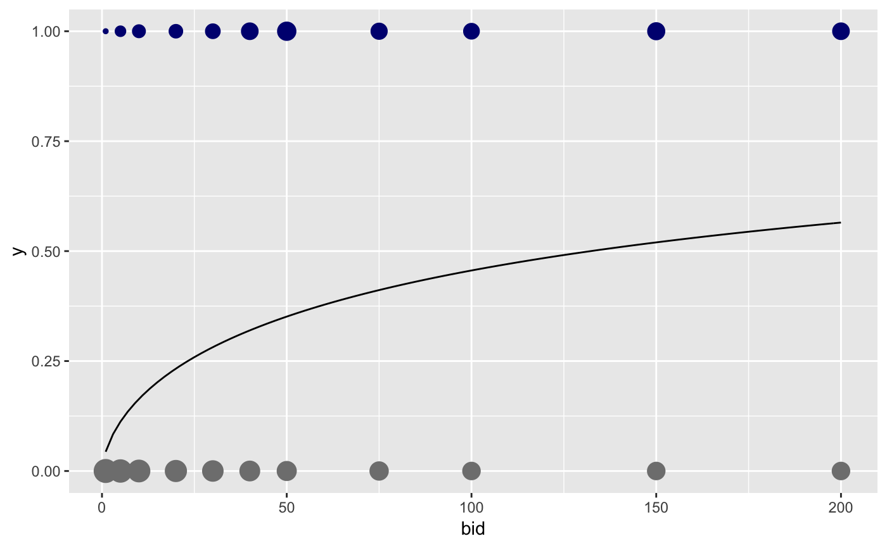
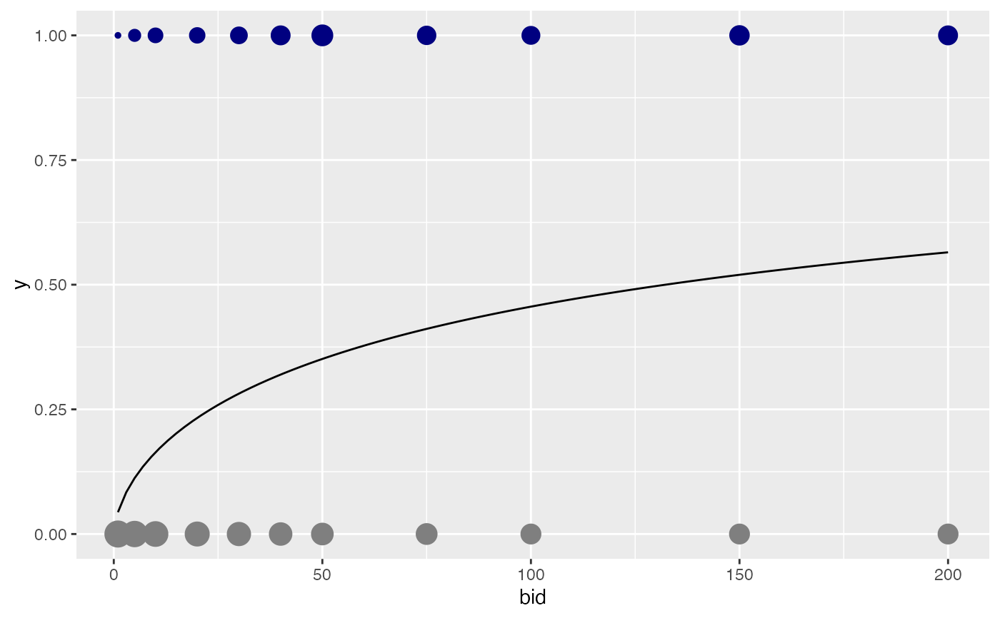
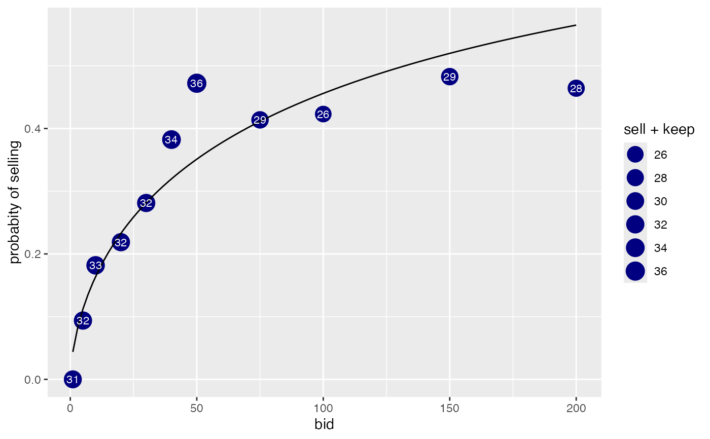
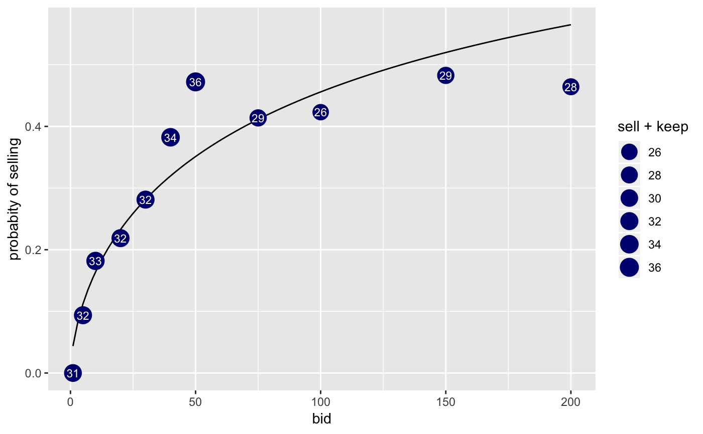

In a 1979 study by Bishop and Heberlein, 237 hunters were each offered one of 11 cash amounts (bids) ranging from $1 to $200 in return for their hunting permits. The data records how many hunters offered each bid kept or sold their permit.
Format
A data frame with 11 rows and 5 columns.
Each row corresponds to a bid (in US dollars)
offered for a goose permit. The colums keep and sell indicate
how many hunters offered that bid kept or sold their permit, respectively.
n is the sum of keep and sell and prop_sell
is the proportion that sold.
Examples
goose.mod <- glm( cbind(sell, keep) ~ log(bid), data = GoosePermits, family = binomial())
gf_point(0 ~ bid, size = ~keep, color = "gray50", data = GoosePermits) %>%
gf_point(1 ~ bid, size = ~ sell, color = "navy") %>%
gf_function(fun = makeFun(goose.mod)) %>%
gf_refine(guides(size = "none"))

ggplot(data = GoosePermits) +
geom_point( aes(x = bid, y = 0, size = keep), colour = "gray50") +
geom_point( aes(x = bid, y = 1, size = sell), colour = "navy") +
stat_function(fun = makeFun(goose.mod)) +
guides( size = "none")

gf_point( (sell / (sell + keep)) ~ bid, data = GoosePermits,
size = ~ sell + keep, color = "navy") %>%
gf_function(fun = makeFun(goose.mod)) %>%
gf_text(label = ~ as.character(sell + keep), colour = "white", size = 3) %>%
gf_refine(scale_size_area()) %>%
gf_labs(y = "probabity of selling")

ggplot(data = GoosePermits) +
stat_function(fun = makeFun(goose.mod)) +
geom_point( aes(x = bid, y = sell / (sell + keep), size = sell + keep), colour = "navy") +
geom_text( aes(x = bid, y = sell / (sell + keep), label = as.character(sell + keep)),
colour = "white", size = 3) +
scale_size_area() +
labs(y = "probabity of selling")
